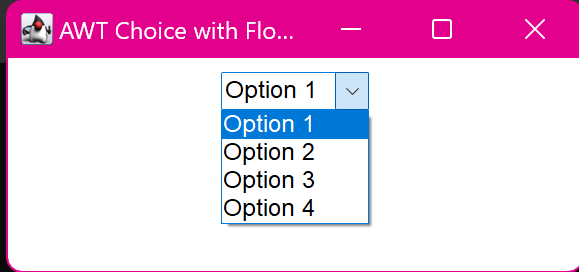

10. Create a simple AWT application that displays a Choice with FlowLayout manager.
import java.awt.*;
import java.awt.event.*;
class main {
public static void main(String[] args) {
Frame frame = new Frame("AWT Choice with FlowLayout");
Choice choice = new Choice();
choice.add("Option 1");
choice.add("Option 2");
choice.add("Option 3");
choice.add("Option 4");
frame.setLayout(new FlowLayout());
frame.add(choice);
frame.setSize(300, 100);
frame.setVisible(true);
frame.addWindowListener(new WindowAdapter() {
public void windowClosing(WindowEvent we) {
System.exit(0);
}
});
}
}
